Node and Combo Styling
Introduction#
In charts, nodes can represent various concrete or abstract entities such as people, locations, servers or accounts, and can carry various levels of detail and information.
Nexus supports a wide range of styling options that let you customise the way nodes look and display information.
For quick but impactful changes, you can for example change a node's colour, fill it with an image or a font icon, or add a contrasting border, glyph or a halo.
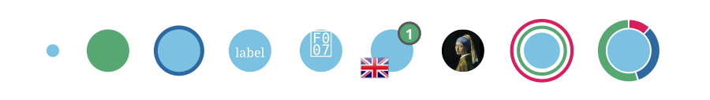
You can find the full list of available APIs in the Node API Reference.
More advanced styling in Nexus isn't advanced in the difficulty of implementation, but rather in the complex issues it can help you solve, such as:
- Large amounts of information or many types of information on a node
- Dynamically changing data (such as names or numbers in varying length)
- A need for interactive elements on nodes (such as buttons or editable fields)
- A specific design language of your application
Using the available node styling APIs, you can create custom and high-precision styling for your nodes to tackle any issues.
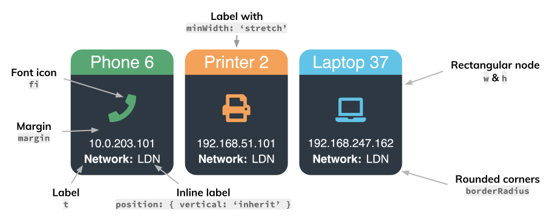
Node shapes and sizes#
By default, nodes in Nexus are drawn as circles with a default diameter of 56. You can also create square or rectangular nodes that behave exactly like circular nodes:
- To create a square node with a default height and width of 56 points, set the shape (sh) to 'box'.
- To create a rectangular node, set the width (w) and height (h) properties.
Enlargement vs. custom width and height#
Circular and square nodes can be scaled by an enlargement factor using the e property. This also scales any labels, node styling and node decorations.
Any node shape can be set to a custom width and height in the w and h properties. For circular and square nodes, you also need to set the sh property to 'circle' or 'box' respectively.
Note that nodes with set width and height cannot be simultaneously enlarged.
Either or both of the w and h properties can be set to 'auto' to automatically size nodes to fit any number or length of labels inside. This is especially useful when nodes contain multiple stacked labels or when the data inside labels comes in variable lengths. To make sure automatically sized nodes don't get too small, you can also set minWidth and/or minHeight.
Rounded corners#
To make one or multiple corners of your square or rectangular nodes rounded, set the borderRadius option.
Advanced label styling#
There are two main aspects to advanced label styling:
- Adding a node label with fully custom styling
- Adding multiple labels on a single node
Currently in beta, the t label property also accepts an object which can contain additional label styling:
t:
{
t: 'A text label',
b: 'rgb(88,167,115)'
}Also in beta, the t label property also accepts
an array of objects to add multiple labels on a node, where each label can
be styled individually:
// by default, labels are stacked vertically downwards in the order of processing
t:[
{
t: 'A text label', // A text label
b: 'rgb(88,167,115)'
},
{
fi: { t: GraphNexus.getFontIcon('fa-user') }, // A font icon label
fc: 'rgb(97,195,230)'
},
{
fbc: 'rgb(97,195,230)' // An empty label, e.g. for use as background or decoration
minWidth: 50
},
],The text string or the font icon inside a label object is the label content. The following styling applies to the content:
| Name | API | Description |
|---|---|---|
| alignment | textAlignment | The alignment inside the label when minHeight and/or minWidth are set and labels are not sized automatically. Pass an object with horizontal and/or vertical options. |
| font colour | fc | The font colour. |
| font family | ff | The font family. |
| font size | fs | The font size. Setting it to 'auto' sizes the font automatically depending on the node size. |
| font style | fb | The style variation of the font. This can either be 'regular' (default) or 'bold'. |
The shape that holds the content is the label container. The containter styling is done in the label object. The following styling applies to the container:
| Name | API | Description |
|---|---|---|
| border colour | b | The colour of the container's border. |
| border radius | borderRadius | The radius of the container's corners. Set this for individual corners or as a single value to be applied to all corners. |
| border width | bw | The width of the container's border. |
| colour | fbc | The colour of the container's background. |
| max height | maxHeight | The maximum container height. Use this to limit the text height when fs is set to 'auto'. |
| max width | maxWidth | The maximum container width. Use it to reduce the text width before a line break when textWrap is set or fs is set to 'auto'. |
| min height | minHeight | The minimum container height. Will stretch to fit content if needed. |
| min width | minWidth | The minimum container width. Will stretch to fit content if needed. Use it to increase the text width before a line break when textWrap is set. |
| margin | margin | The distance between the label and another label, or the label and its node. Calculated outside of label or node borders. |
| padding | padding | The distance between the content and the container. Calculated outside of label borders. The default padding is '2 2 0 2' (top, right and left). |
| position | position | Label position in relation to the node. Pass strings to set position outside or an object with horizontal and/or vertical options to set it inside. |
| text wrapping | textWrap | The text wrapping inside the container. Use this in combination with minWidth or maxWidth to control where the line breaks. |
| font icon | fi | The font icon inside the container as the label content. |
| text | t | The text string inside the container as the label content. |
Label size and content#
By default, a label is sized to fit the content inside the label.
You can set your own size using the minWidth and minHeight properties, or set any of these properties to 'stretch' to fill the whole width/height of the node.
If a label is larger than its content, the content is aligned in the middle and centre by default.
To change this, set the
horizontal and/or
vertical options inside the
textAlignment object.
In both default size and custom size labels, you control the content inside to offer the best possible readability at any content length, label size or zoom level:
- Set fs (font size) to 'auto' to scale the font to any label size and zoom level. You can also set maxWidth and maxHeight to set maximum width and height of the content.
- Set textWrap to 'normal' to wrap the content on whitespaces created by the space character. You can also set maxWidth to set the maximum label width before a line break.
Playgroundt:[ { t: 'Default size label' }, { t: 'Custom size and text alignment', minWidth: 300, minHeight: 40, fbc: green, textAlignment: { horizontal: 'right', vertical: 'bottom' }, }, { t: 'Automatic font sizing', fs: 'auto', }, { t: 'Minimum width stretched', minWidth: 'stretch', }, { t: 'Maximum width, text wrapping and auto font sizing', textWrap: 'normal', fs: 'auto', maxWidth: 100, }, ],
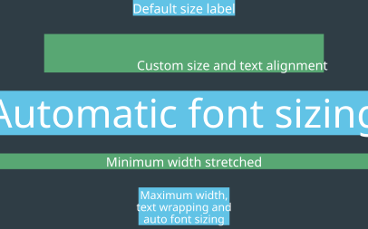
Label positioning#
Labels can be anchored to nodes from the outside or from the inside.
By default, a label is located inside the node in its centre. To control the exact location of the label on the node, you can use the position property:
- To set the anchor point inside, use the vertical and horizontal options to set the position to any world coordinates or relative to the node's corners.
- To set the anchor point outside, pass a string compass value ('n' for north, 'ne' for north east etc.) directly in the position property.
Note that if there are multiple labels with completely or partially overlapping positions, the label which was processed later will be drawn over the label which was processed earlier.
Playgroundt: [ { t: 'top and left', position: { vertical: 'top', horizontal: 'left' } // inside in the top left corner }, { t: '50px and 50px', position: { vertical: 50, horizontal: 50 } // inside at given world coordinates }, { t: 'north', position: 'n' // outside in the north position }, ],
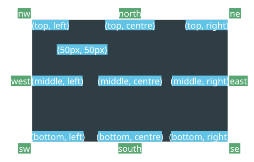
Multiple inline labels#
By default, multiple labels without any positioning are stacked vertically downwards in the order of processing.
If you want to place multiple labels on the same line, there are two ways to do it:
- If a label has no vertical position,
any other labels with
vertical: inheritposition are placed inline to the previous label. - If a label has a vertical position, any other labels with the same vertical position are placed inline to the previous label.
Playgroundt: [ { t: 'no position' }, { position: { vertical: 'inherit' }, // inline by setting vertical: 'inherit' t: 'inline by inherit', }, { position: { vertical: 'bottom' }, t: 'vertical position', }, { position: { vertical: 'bottom' }, // inline by setting the same vertical position t: 'inline by vertical position', }, ]
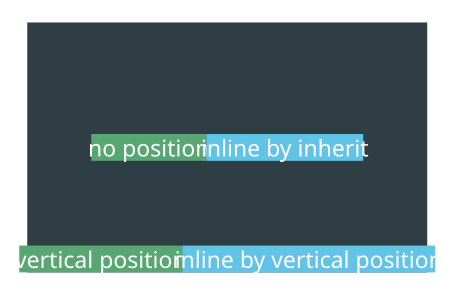
Margin, padding and border#
Nexus APIs for padding and margin are similar to how padding and margin properties work in CSS.
The padding API in Nexus sets the distance between the content edge and the container edge (or the inside edge of its border).
The margin API in Nexus sets the distance between:
- the label edge (or the outside edge of its border) and another label edge (or the outside edge of its border)
- the label edge (or the outside edge of its border) and the edge of its node (or the inside edge of its border)
Both can be defined in any of the traditional CSS formats:
- A single number - same value applied all around.
- An array of two, three or four numbers separated by commas.
- A string of two, three or four numbers separated by spaces as shorthand properties - see W3Schools CSS margin and W3Schools CSS padding for details.
- An object containing individual properties, e.g.
margin: { top: 30, bottom: 20 }.
Setting a colour in the b property sets a border around the label container. The border is drawn on the outer line, with half of the border placed inside and half outside the container.
When a label is positioned on an inside node edge, the inside of the label border is aligned with the node edge by default.
Playgroundt: [ { t: 'label 1', b: 'rgba(88,167,115,0.4)', // green border drawn equally inside and outside the label bw: 30, // border width padding: 40, // padding between border edge and text position: { vertical: 'top', // inside of label border aligned to node edge horizontal: 'left' }}, { t: 'label 2', position: { vertical: 'inherit' }, // 'inherit' aligns label with top of label 1 border margin: '30 0 0 100', // top, right, bottom, left }, ]
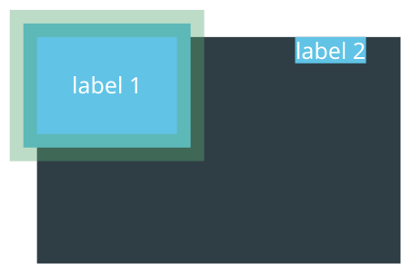
Advanced combo styling#
Many of the advanced styling features described in this documentation are also available for combos.
Closed combos look and behave just like regular nodes, which means that they also have the same styling options including all of the features above.
Open combos display all of their child nodes arranged within a combo border, and can be customised in a number of ways including:
- rectangular combos with border radius
- labels with advanced label styling
- custom glyphs
Note that this feature is currently in beta.
For more details about combos, see the Styling for combos documentation.
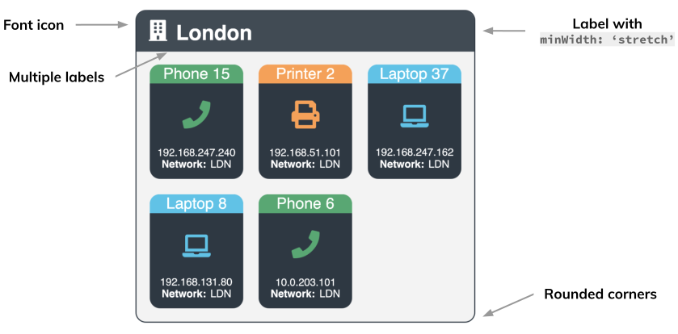
By default, open combo labels are drawn outside and below the combo. When adding labels inside open combos, you may need to consider how they fit in with the combo contents.
There are simple rules, based on the position property, that describe the positioning rules between open combo labels and combo contents:
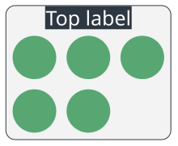 | Label above or below the content:
|
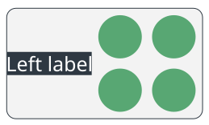 | Label to the left or right of the content:
|
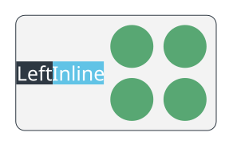 | Multiple inline labels to the left or right of the content:
|
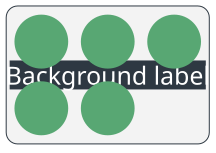 | Label behind the content:
|
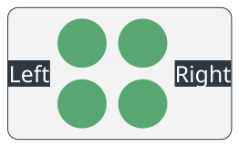 | Labels on both sides of the content:
|